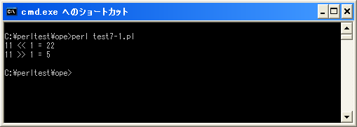

シフト演算子
シフト演算子はビット演算子の一つで数値の各ビットを左又は右へシフトさせるための演算子です。
| 演算子 | 記述例 | 意味 |
|---|---|---|
| << | a = a << 2 | 左シフト |
| >> | a = a >> 2 | 右シフト |
ビット演算子と同じく対象の値を2進数のビットとして考え、ビットを左又は右へシフトさせます。なお2進数において左へ1つビットをシフトさせることは値を2倍することに相当し、右へ1つビットをシフトさせることは値を1/2にすることに相当します。
左シフト
それではまず左シフトから確認してみます。例として11を1ビット左へシフトさせてみます。
00000000000000000000000000001011 = 11 --------------------------------------- 00000000000000000000000000010110 = 22
各ビットを指定した数だけ左へシフトします。左端からはみ出した部分は削除され、シフトしたことによって空いた右端は「0」が格納されます。結果として11を1ビット左へシフトすると22となります。
my $var; $var = 11; $var = $var << 11;
上記の結果として変数「$var」には数値の「22」が格納されます。
右シフト
次に右シフトから確認してみます。例として11を1ビット右へシフトさせてみます。
00000000000000000000000000001011 = 11 --------------------------------------- 00000000000000000000000000000101 = 5
各ビットを指定した数だけ右へシフトします。右端からはみ出した部分は削除され、シフトしたことによって空いた左端は「0」が格納されます。結果として11を1ビット右へシフトすると5となります。
my $var; $var = 11; $var = $var >> 11;
上記の結果として変数「$var」には数値の「5」が格納されます。
なお負の値に対して右シフトした場合、プログラム言語によっては左端に「1」が格納されるものもありますが、Perlでは負の値であっても左端には「0」が格納されます。
サンプルプログラム
では簡単なプログラムで確認して見ます。
use strict; use warnings; use utf8; binmode STDIN, ':encoding(cp932)'; binmode STDOUT, ':encoding(cp932)'; binmode STDERR, ':encoding(cp932)'; my ($src, $dst); $src = 11; $dst = $src << 1; print "$src << 1 = $dst¥n"; $src = 11; $dst = $src >> 1; print "$src >> 1 = $dst¥n";
上記を「test7-1.pl」の名前で保存します(文字コードはUTF-8です)。そしてコマンドプロンプトを起動し、プログラムを保存したディレクトリに移動してから次のように実行して下さい。

( Written by Tatsuo Ikura )

著者 / TATSUO IKURA
初心者～中級者の方を対象としたプログラミング方法や開発環境の構築の解説を行うサイトの運営を行っています。